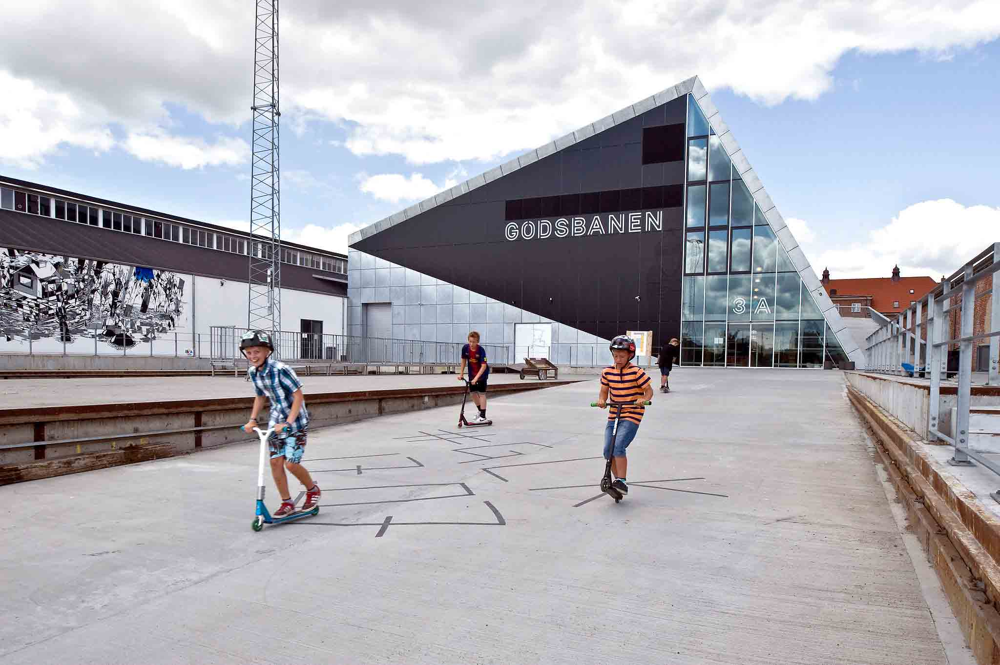

Case 1
I vores case 1 var jeg blevet sat i gruppe med Kateryna, Sofie, Yuki og Maja hvor vi fik at vide at vores emne var Århus kulturby. Grunden til at det lige netop blev det emne var fordi at Århus er kulturhoved i Europa i 2017 og i forbindelse med at det er første gang, vil det ofte være sådan at der vil være nogle ting som kunne have plads til forbedringer. Derfor fik vi nogle feltdage tilrettelagt på vores skema, hvor vi skulle gå ud i Århus for at finde en stand der havde noget med Århus kulturhovedstad at gøre for at finde deres produkt og derefter overvejer om der var plads til forbedringer. Vi besluttede os for at finde noget unkit som ingen af de andre havde valgt, derfor valgte vi godsbanen.
Gennem vores research fandt vi ud af at de modtager ydelser fra en fond der hedder 2017, så man har mulighed for at holde et bedre arrangement end det normalt plejer at gøre. Derfor tog vi et kig på den nuværende hjemmeside og deres Facebook side for at sikrer os at deres kommunikation ud til kunderne er helt op-timalt, da det er afgørende for deres værdiskabelse på stedet og, hvis det er ikke optimalt vil det reducere antallet af besøgende gæster.
Gennem case 1 har jeg lært at udarbejde et fædigt produkt med en gruppe. I begyndelsen var jeg ikke fan af at mine beslutninger ikke var det endelige resultat, men derfor er det er vigtigt at man i en gruppe har nogle man kan diskuter sine valg, fordi så når man frem til det bedste resultat og det kan også være at de kommer med et forslag som er bedre end hvad man selv havde forestillet sig. Derudover lærte vi at arbejde med Sprint metoden og vi har yderligere også lært hvordan man organiser sin planlægning i forhold til at uddele forskellige opgaver ud til hver gruppemedlem, så man til sidst har et færdigt produkt, hvor alle har bidraget.
